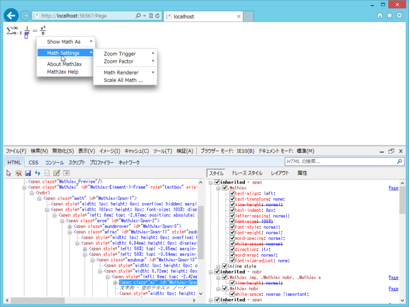

WebMatrix で数式を表現する（2）
公開日：
WebMatrix で数式を表現する（１） - だるろぐ の続き。前回の方法は、Google の気分次第でいつでも廃止されちゃいます。というわけでもう少し調べたところ、MathJax.js という素敵な JavaScript ライブラリがあるそうなので、こっちを使うほうがいいのかも。
たとえばこんな感じ。

# Default.cshtml@{
}
<!DOCTYPE html>
<html lang="en"> <head> <meta charset="utf-8" /> <title></title> <script src="http://cdn.mathjax.org/mathjax/latest/MathJax.js?config=TeX-AMS_HTML"> </script> </head> <body> (\sum_{n=1}^\infty \frac{1}{n^2} = \frac{\pi^2}{6}) </body> </html>
(……) で囲まれた部分が TeX 記法の数式として扱われ、文系人間にも読める形へ変換されます。もはや WebMatrix （ASP.NET Web Page）である必要すらない、とても汎用的な方法ですね！
難点と言えば、複雑怪奇ゲロゲロな HTML タグが吐き出されることと、ちょっと余計な機能が多すぎるかな、といった点でしょうか。ほとんど難癖に近いですけれど。
あと思いつくのは while(true); のような方法を利用して、サーバー側でレンダリングする方法でしょうか。そっちのほうが WebMatrix とは思いますが、ちょっとめんどくさいですね。